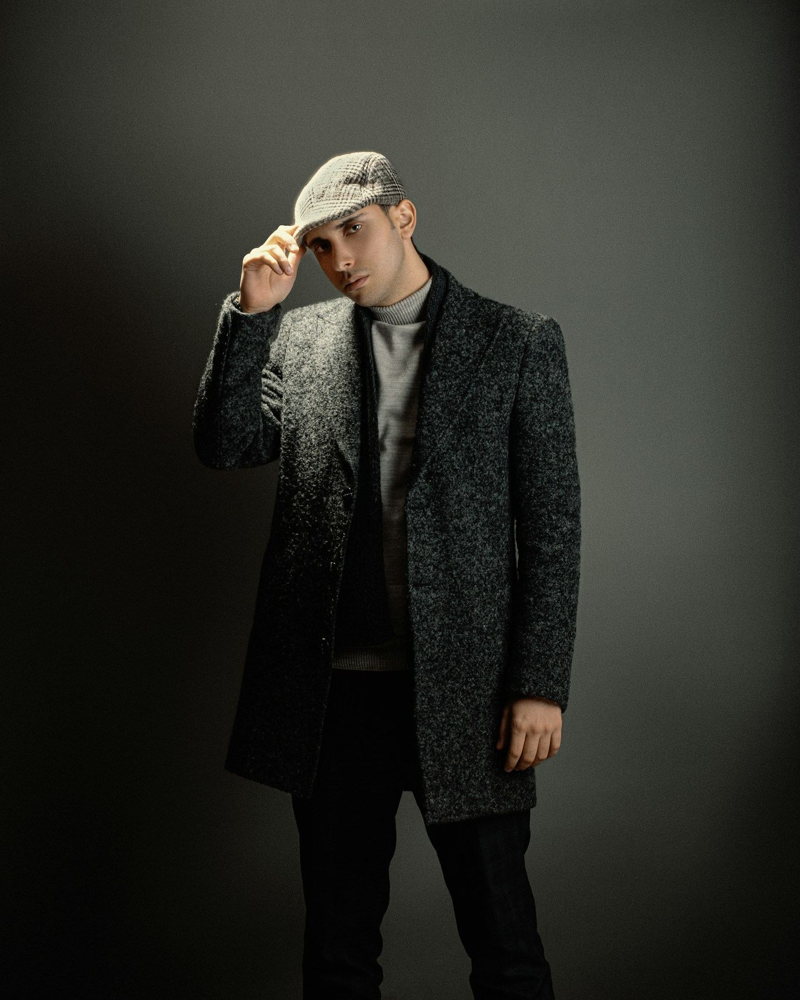
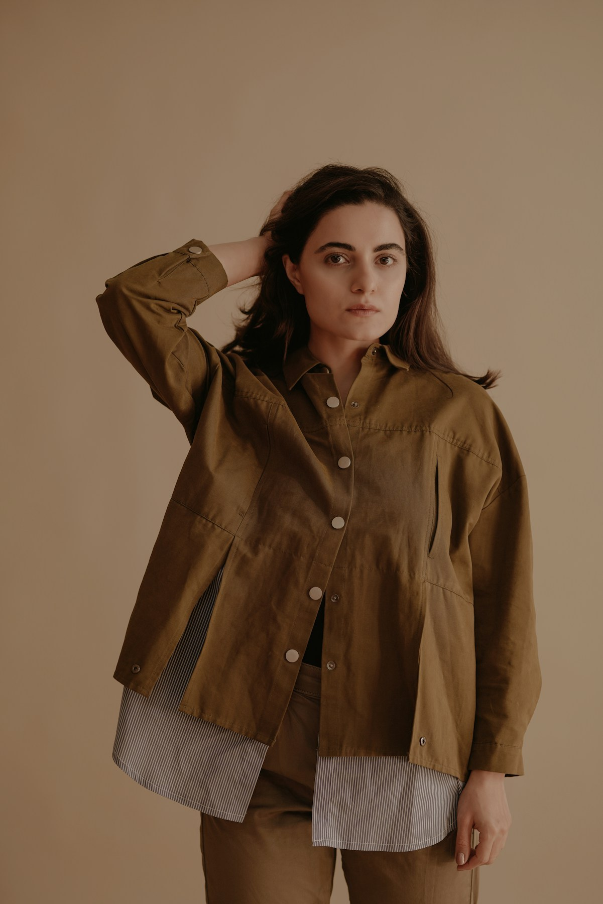
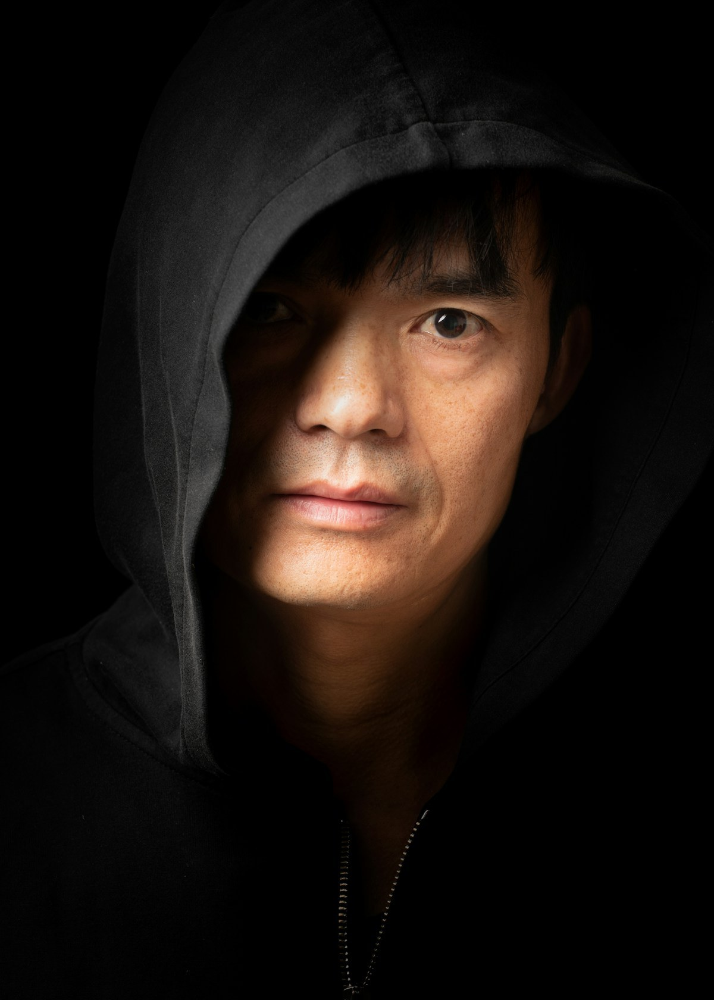
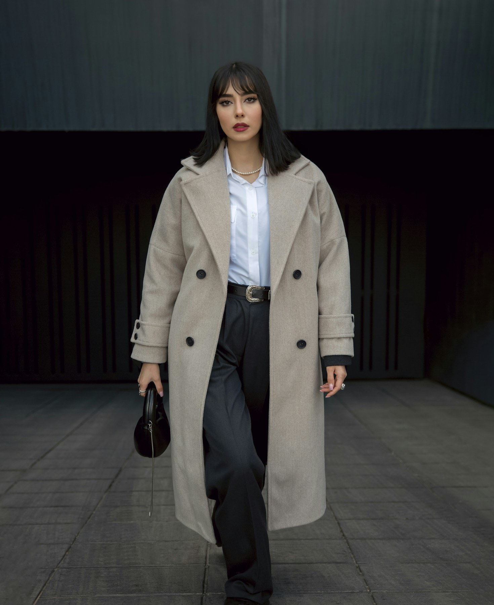
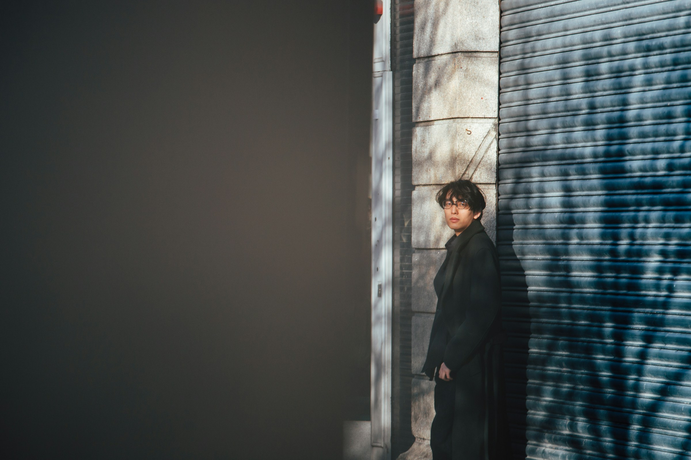
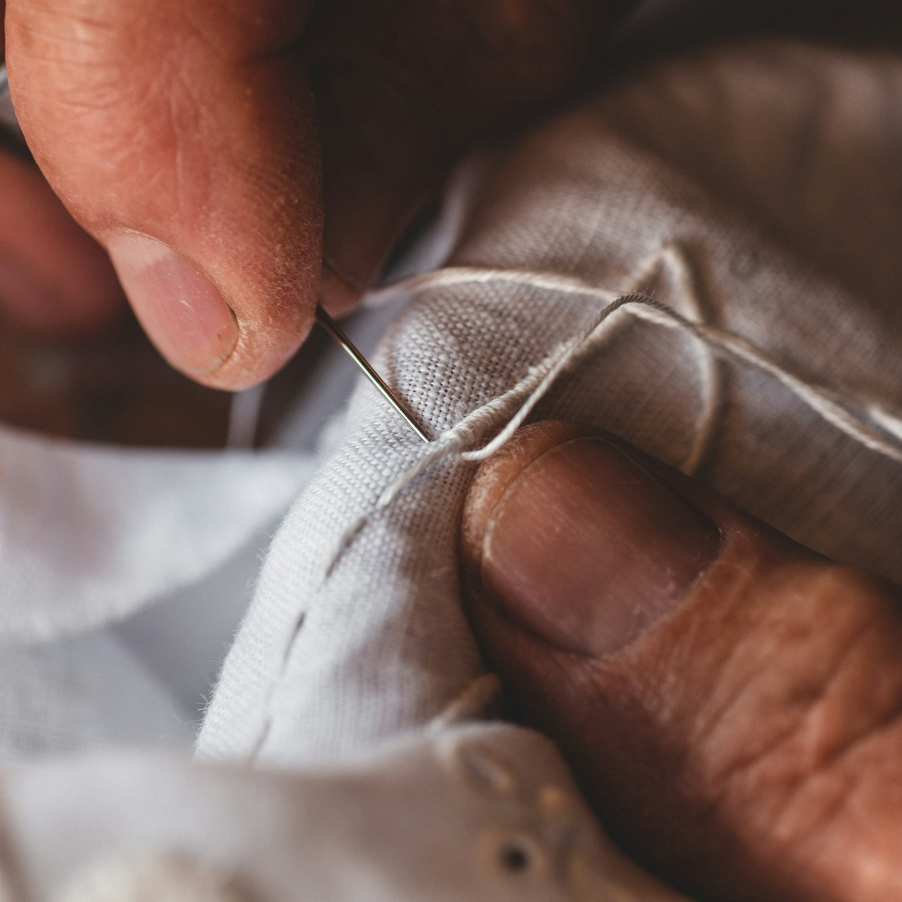
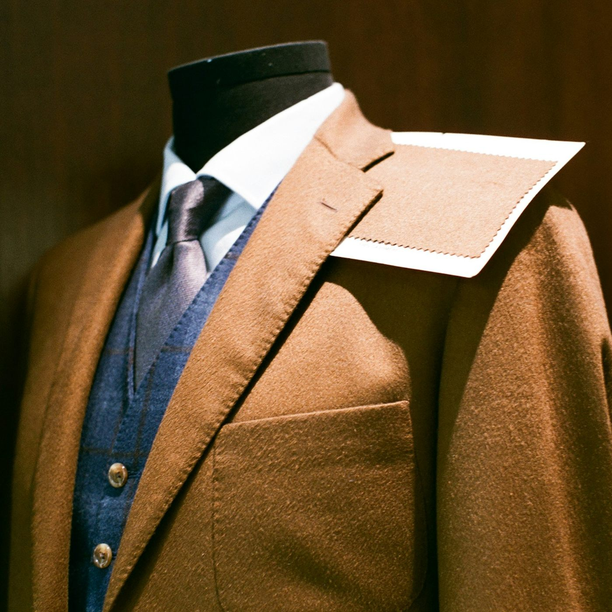

NOCTÉ
Karaköy'de kesilen, elde bitirilen dış giyim. Az parça, uzun ömür.
Model 01 Denim Çalışma Ceketi ₺6.950(01) Manifesto
Az ama doğru. Her parça Karaköy'deki atölyemizde tek bir terzinin elinden çıkar. Mevsim için değil; yıllarca giyilmek, onarılmak ve bir gün devredilmek için dikiyoruz.
- Kuruluş
- 2019, Karaköy
- Sezon başına
- 4 model
- Onarım
- Ömür boyu, ücretsiz
(02) Koleksiyon · Sonbahar / Kış 26
01 / 04
Sürükle, çevir · rengi değiştir · gerçek ürün fotoğrafı
(03) Lookbook
İstanbul, sabahın altısı.
Sezonun parçalarını şehrin en sessiz saatinde, gün ağarırken fotoğrafladık. Sağa doğru kaydırın.




Sezon boyunca
Mağazayageç →

Atölyedensokağa.
Model 01 · 18 saatlik el işçiliği
(04) Atölye
Bir ceketin anatomisi
Çift dikişli yaka
Telasız, iki kat denimle şekillenir. Yıkandıkça boyna oturur ve kendi kırışığını alır.
Bakır çakma düğmeler
Pas tutmayan bakır alaşım, elde çakılır. Zamanla koyulaşıp patina kazanır.
14 oz selvedge denim
Okayama'da eski mekikli tezgâhlarda dokunur. İndigo her yıkamada biraz daha açılır.
Kapaklı yama cepler
Köşeleri barteks dikişle sağlamlaştırılır. Yükü taşıyan dikiş, inçte 12 batış.
42 üretim adımı18 saat el işçiliği1 terzi


(05) Süreç
Yavaş yapılır, uzun yaşar.
- 01
Kalıp
Her beden için kâğıt kalıp elde çizilir; sezonlar boyunca aynı kalıbı inceltiriz.
- 02
Kesim
Kumaş bir gece dinlendirilir, sonra tek kat halinde makasla kesilir.
- 03
Dikim
Bir parçayı baştan sona tek terzi diker; iç etikette adı yazar.
- 04
Bitiş
İlikler elde açılır, düğmeler elde dikilir, son ütü buharla yapılır.
- Üretim adımı
- 42
- Saat / ceket
- 18
- Onarılan parça, 2025
- 1.240
(06) Mağaza